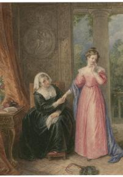
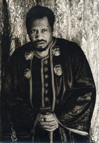
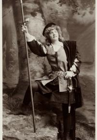
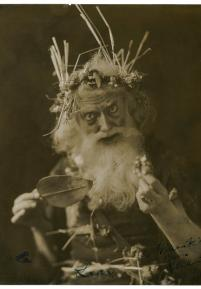
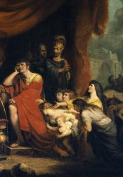

MY WORK






William Shakespeare was a renowned English poet, playwright,
and actor born in 1564 in Stratford-upon-Avon. His birthday is most commonly
celebrated on 23 April (see When was Shakespeare born),
which is also believed to be the date he died in 1616.
Shakespeare was a prolific writer
during the Elizabethan and Jacobean ages of British theatre
(sometimes called the English Renaissance or the Early Modern Period).
Shakespeare’s plays are perhaps his most enduring legacy, but they are not all he wrote.
Shakespeare’s poems also remain popular to this day.
Records survive relating to William Shakespeare’s family that offer an understanding
of the context of Shakespeare's early life and the lives of his family members.
John Shakespeare married Mary Arden, and together they had eight children. John and Mary lost two
daughters as infants, so William became their eldest child. John Shakespeare worked as a glove-maker,
but he also became an important figure in the town of Stratford by fulfilling civic positions.
His elevated status meant that he was even more likely to have sent his children, including William,
to the local grammar school.
.
There is a great possibility that Shakespeare would have been more familiar
with the works of Geoffrey Chaucer (1340-1400) and he uses several of Chaucer’s
poems as sources of his plays. Troilus and Criseyde was the primary source of
Troilus and Cressida, and the Parliment of Fowles was a source of
Mercutio’s “Queen Mab” speech in Romeo and Juliet.
hakepeare would almost certainly have been aware of the story of the The Sea Venture.
On June 2, 1609, the Sea Venture set sail from Plymouth as the flagship of a seven-ship
fleet (towing two additional pinnaces) for the New World, carrying settlers to the new town
of Jamestown in Virginia. Nearly two months into the trip, the ship was caught in a hurricane,
leading the captain to ground it on the reefs of an island. By crash landing on Bermuda,
150 people and a dog were saved from the storm.
Although William Shakespeare was not blessed to live a long life.However throughout
his short life, Shakespeare accomplished a lot things. He wrote 154 sonnets,
38 plays and 2 narratives. Romeo and Juliet, A Midsummer Nights Dream, Hamlet and
Macbeth are amongst his most famous work.He wrote about issues that are apparent in
society which also include tragedies and comedies.
Shakespeare has an endless list of wonderful achievements.
Take for instance the English language would not have been what it is today if Shakespeare did not exist.
He plays a great role in shaping literature to what is currently.He is globally known. Everybody knows the name
William Shakespeare. He is considered the best playwright of all time. Even being able to write plays in his time
was an achievement, because of the amount of illiterate people there were.
He shaped the performing art community by writing plays that were entertaining and educating.
Not only informing the public but helping them become aware.He wrote about controversial subjects,
(i.e. the political system, the judicial system, and others).He had the guts to point out the cons as well as
the pros.He allowed the underlings of society attend his plays. Although they had to stand the length of the
performance at the head of the theater he still felt it important to let everyone be cultured and educated.
His works are still ever popular today. While other plays and movies wither away, his plays are still timeless.
Almost everyone recognizes lines from his plays without knowing they”re origin; dead as a door nail,
neither a borrower nor a lender be, to thine own self be true,just to name a few.
Shakespeare knew how to handle his audience. He wrote both for
queen and peasant. He was the creator of emotion in the play house and never has
anyone else stood as tall for as long as he has regarding this quality.